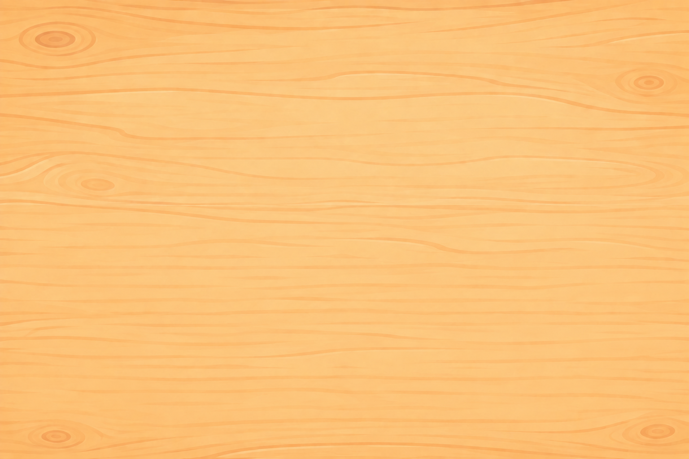
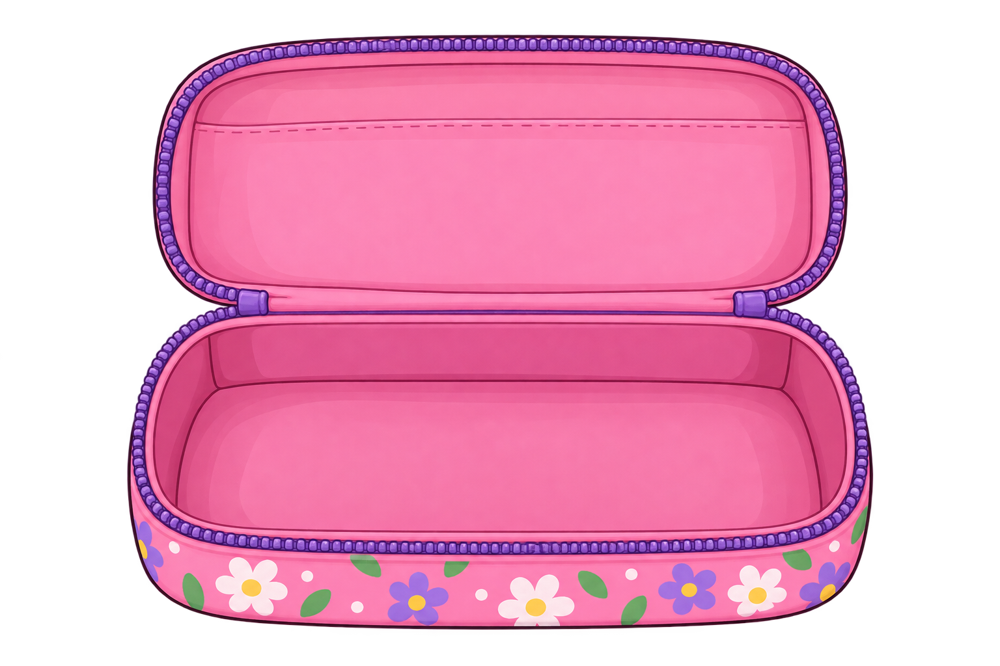
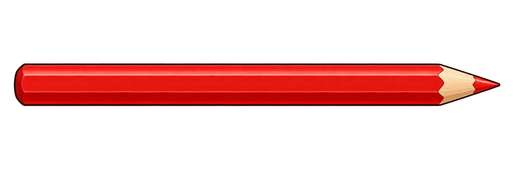
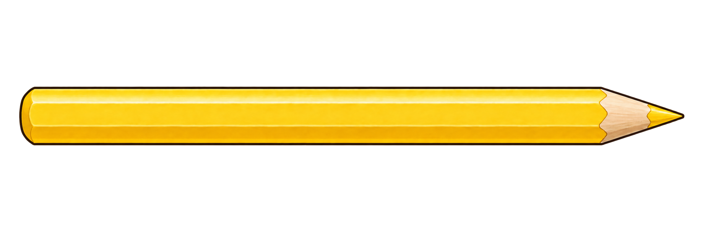
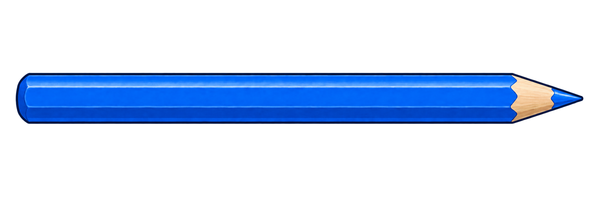
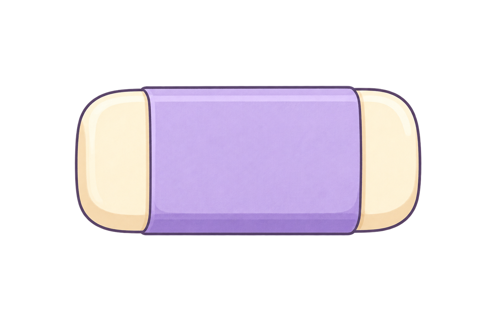
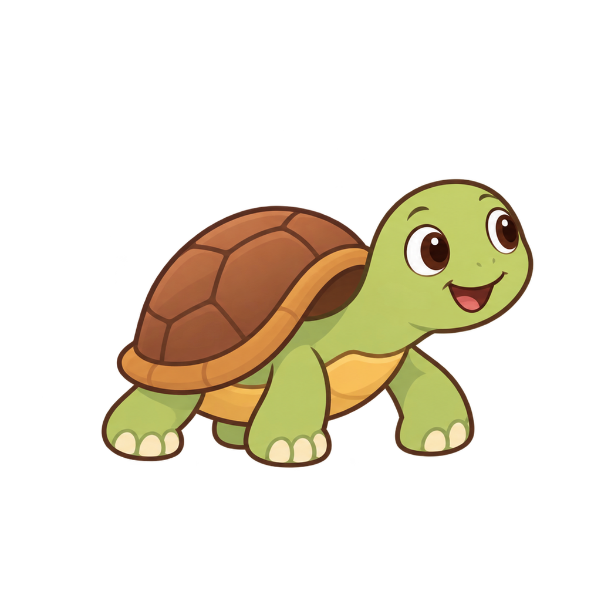
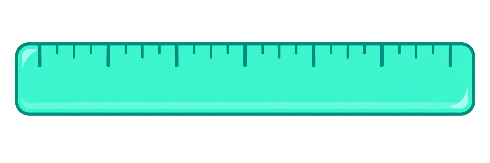
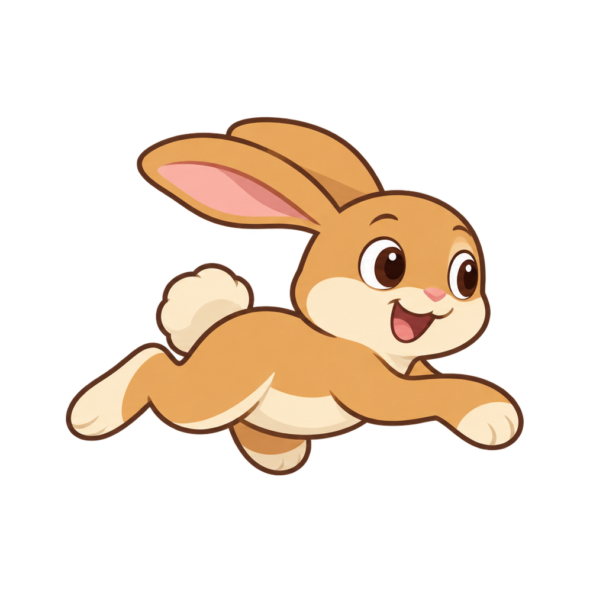

Let's make some music.
Drag a pencil into the grid to make music
Click a pencil to change its volume
Drag the eraser to remove a note
Slide along the ruler to change the speed
Ready? Let's jam!








